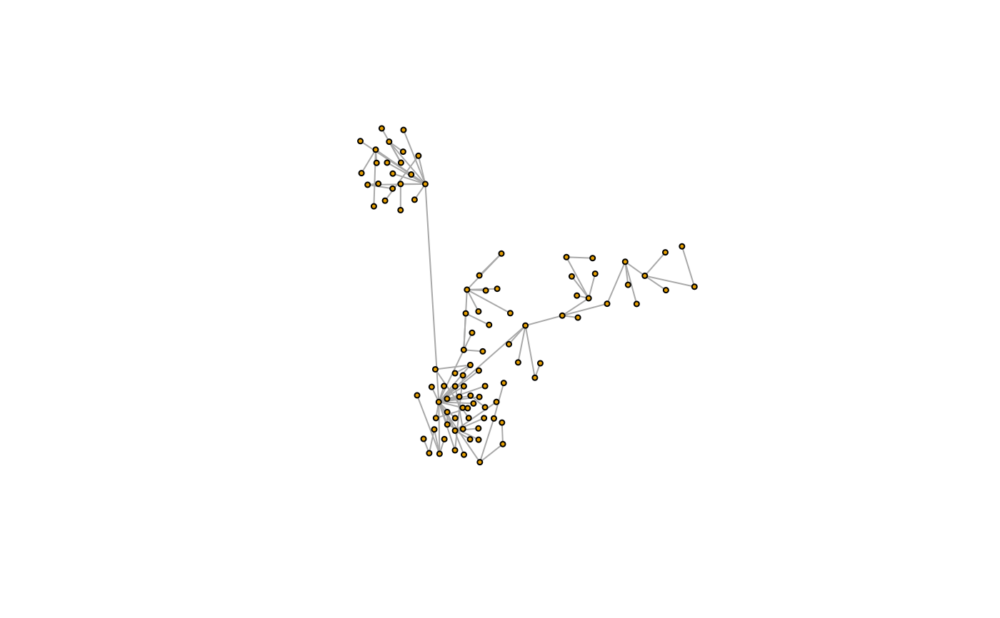

DrL is a force-directed graph layout toolbox focused on real-world large-scale graphs, developed by Shawn Martin and colleagues at Sandia National Laboratories.
Arguments
- graph
The input graph, in can be directed or undirected.
- use.seed
Logical scalar, whether to use the coordinates given in the
seedargument as a starting point.- seed
A matrix with two columns, the starting coordinates for the vertices is
use.seedisTRUE. It is ignored otherwise.- options
Options for the layout generator, a named list. See details below.
- weights
The weights of the edges. It must be a positive numeric vector,
NULLorNA. If it isNULLand the input graph has a ‘weight’ edge attribute, then that attribute will be used. IfNULLand no such attribute is present, then the edges will have equal weights. Set this toNAif the graph was a ‘weight’ edge attribute, but you don't want to use it for the layout. Larger edge weights correspond to stronger connections.- dim
Either ‘2’ or ‘3’, it specifies whether we want a two dimensional or a three dimensional layout. Note that because of the nature of the DrL algorithm, the three dimensional layout takes significantly longer to compute.
- ...
Passed to
layout_with_drl().
Details
This function implements the force-directed DrL layout generator.
The generator has the following parameters:
- edge.cut
Edge cutting is done in the late stages of the algorithm in order to achieve less dense layouts. Edges are cut if there is a lot of stress on them (a large value in the objective function sum). The edge cutting parameter is a value between 0 and 1 with 0 representing no edge cutting and 1 representing maximal edge cutting.
- init.iterations
Number of iterations in the first phase.
- init.temperature
Start temperature, first phase.
- init.attraction
Attraction, first phase.
- init.damping.mult
Damping, first phase.
- liquid.iterations
Number of iterations, liquid phase.
- liquid.temperature
Start temperature, liquid phase.
- liquid.attraction
Attraction, liquid phase.
- liquid.damping.mult
Damping, liquid phase.
- expansion.iterations
Number of iterations, expansion phase.
- expansion.temperature
Start temperature, expansion phase.
- expansion.attraction
Attraction, expansion phase.
- expansion.damping.mult
Damping, expansion phase.
- cooldown.iterations
Number of iterations, cooldown phase.
- cooldown.temperature
Start temperature, cooldown phase.
- cooldown.attraction
Attraction, cooldown phase.
- cooldown.damping.mult
Damping, cooldown phase.
- crunch.iterations
Number of iterations, crunch phase.
- crunch.temperature
Start temperature, crunch phase.
- crunch.attraction
Attraction, crunch phase.
- crunch.damping.mult
Damping, crunch phase.
- simmer.iterations
Number of iterations, simmer phase.
- simmer.temperature
Start temperature, simmer phase.
- simmer.attraction
Attraction, simmer phase.
- simmer.damping.mult
Damping, simmer phase.
There are five pre-defined parameter settings as well, these are called
drl_defaults$default, drl_defaults$coarsen,
drl_defaults$coarsest, drl_defaults$refine and
drl_defaults$final.
References
See the following technical report: Martin, S., Brown, W.M., Klavans, R., Boyack, K.W., DrL: Distributed Recursive (Graph) Layout. SAND Reports, 2008. 2936: p. 1-10.
See also
layout() for other layout generators.
Author
Shawn Martin (http://www.cs.otago.ac.nz/homepages/smartin/) and Gabor Csardi csardi.gabor@gmail.com for the R/igraph interface and the three dimensional version.
Examples
g <- as.undirected(sample_pa(100, m = 1))
l <- layout_with_drl(g, options = list(simmer.attraction = 0))
plot(g, layout = l, vertex.size = 3, vertex.label = NA)
